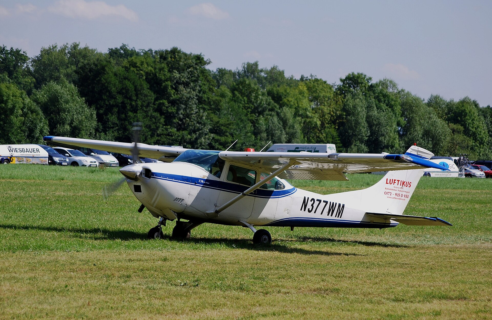
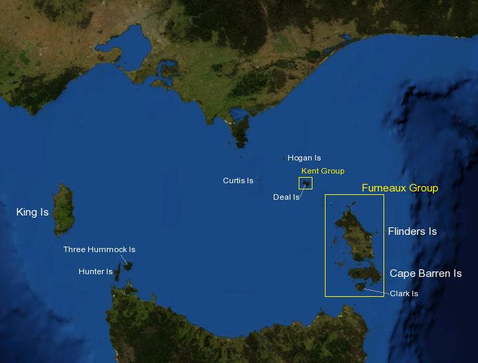

FigureFrederick Valentich (1958–1978, presumed)
aka Frederick Valentich · Valentich
Twenty-year-old Australian pilot who vanished in a Cessna 182L over Bass Strait at approximately 19:12 local time on 21 October 1978 while flying from Moorabbin Airport to King Island. His final transmission to Melbourne Flight Service described an unidentified aircraft orbiting his own; his last reported words were "It's not an aircraft."
From the creepy index — rank №15. At 19:12:28 on 21 October 1978 the Melbourne Flight Service Unit recorded 17 seconds of metallic scraping immediately after pilot Frederick Valentich's transmission "It's not an aircraft," then loss of signal. No wreckage of his Cessna 182L was ever recovered despite a major RAAF and RAN search. The Australian Department of Transport's 1982 final report concluded "not determined."



What's documented
Twenty-year-old Australian Air Training Corps instructor; private pilot license; ~150 hours flight time. On the evening of 21 October 1978, Valentich was flying a Cessna 182L registered VH-DSJ from Moorabbin Airport, Melbourne, to King Island in Bass Strait for what he had told his father was a personal flight to collect crayfish. At 19:06 local time he contacted Melbourne Flight Service Unit operator Steve Robey and reported an unidentified aircraft above him, then described it as a long shape with four bright lights, then reported engine roughness. His final transmission at approximately 19:12:28 was: “It’s not an aircraft” — followed by 17 seconds of metallic scraping sound recorded on the FSU tape, then loss of signal. No wreckage was ever recovered despite an immediate Royal Australian Air Force and Royal Australian Navy search. The Australian Department of Transport’s investigation, completed May 1982, concluded the cause of disappearance was “not determined.” The full FSU transmission tape was released and is in the public domain; an engine cowl flap from a Cessna 182, possibly DSJ, washed up on Flinders Island in 1983 but was never definitively matched. Valentich had filed a correct flight plan; he was sober; the weather was clear; his aircraft had a full fuel load. The case is the only modern disappearance of a pilot on a recorded radio channel describing a UAP in the moment of vanishing.